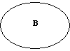
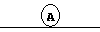

Angles
OK, quake is a game of angles, and a good understanding of why splash damage works the way it does is obviously very important.
This entire section deals with the rocket launcher only. The strategy changes significantly once you add in instant-hit weapons like the rail.
For example, let's take the high ground vs. low ground problem.
|
|
|
| A
-------------+
|
|
|
| B
+-----------------
Both player A and player B have the rocket launcher, and are strafing around in the usual fashion desperately avoiding rockets and looking like fools.
A will obviously win this situation. If you don't understand this, let's look at it a different way. I apologize for the gimpy graphics.
Here is what A sees:

and here is what B sees:

The circles represent the 'hit zone'. Since A has the ground to work with, he can miss by a much larger margin than B and still do damage.
The moral of this story is high ground, high ground, high ground. I will die defending my high ground.
This same principle applies to on-the-level fighting as well. Let's say player A likes walking near walls. Here's a cross-section of the situation:
|
|A B
+--------------
Once again, let's translate the 3d world to a 2d hit zone.
Here's what B sees:
 And here's what A sees:
And here's what A sees:
 Now all A has to do is shoot the wall behind B. B has to work with the small area under A's feet. The moral of that story is walking along the edges of things is good.
What this all comes down to is, instead of thinking of quake as a 3d world, think of it as 2d, with your location determining the size of your target.
Weapons
After playing rocket arena for a while, I have some thoughts on weapon use that may be of use in standard 1v1.
Rocket launcher
There's not much to say about this. Primary weapon at close and medium range. Inventive use can make this the primary weapon at long range too.
Lightning gun
The lightning gun is a good way to reliably do a small amount of damage. It is greatly affected by armor.
These two things make it an excellent finishing weapon. Only use it at the beginning of a fight if it's all you have or you're very good with it.
Plasma gun
At close to medium range, the lightning gun will normally do more damage; at longer range, even the machine gun will work better.
The plasma gun is good for blinding your opponent.
If you've ever tried to rail someone while they're plasmaing you, you'll know what I mean.
Rail
The rail is a good way to do a lot of damage unreliably. Using the rail is a risk, no matter how good you are at it.
It is the primary long-range weapon, obviously. For a long time I used it a lot close range too; this is a terrible mistake.
At close range, if you don't want rocket splash, use the shotgun. It will do more damage more reliably than the rail.
If you don't have the shotgun, and still can't handle the splash from the rl, lightning or even plasma will be superior. Only use this weapon close range if it's all you have.
Machine gun
The machine gun is the best way to reliably do a small amount of damage at long range.
This makes it a good finishing weapon, if your enemy has retreated to rail you due to his low health.
It is also good for setting up a solid foundation of damage on the large, open levels such as dm17.
Shotgun
The shotgun is invaluable. Close range it does more damage per second than any other weapon.
Medium range it is a great way to reliably do damage.
It is great for finishing at both close and medium range; it is debatable whether it is better or worse than the lightning gun for this.
Guantlet
If you're out of ammo (obviously), or your goal is to humiliate your opponent, use the guantlet.
It can also be used as an ambush tool (especially on the old dm13), but switching to a real weapon takes too long, so I say don't use it.
Grenade launcher
This is a satisfying weapon to use, if you can use it well.
The only thing it's actually good at, however, is shooting around corners if you know your opponent is waiting there, and it's a rare situation where a rocket won't suffice for that.
A lot of people like to flood areas with grenades; any player worth his salt can easily dodge this. Only use this weapon if you have to.
Now all A has to do is shoot the wall behind B. B has to work with the small area under A's feet. The moral of that story is walking along the edges of things is good.
What this all comes down to is, instead of thinking of quake as a 3d world, think of it as 2d, with your location determining the size of your target.
Weapons
After playing rocket arena for a while, I have some thoughts on weapon use that may be of use in standard 1v1.
Rocket launcher
There's not much to say about this. Primary weapon at close and medium range. Inventive use can make this the primary weapon at long range too.
Lightning gun
The lightning gun is a good way to reliably do a small amount of damage. It is greatly affected by armor.
These two things make it an excellent finishing weapon. Only use it at the beginning of a fight if it's all you have or you're very good with it.
Plasma gun
At close to medium range, the lightning gun will normally do more damage; at longer range, even the machine gun will work better.
The plasma gun is good for blinding your opponent.
If you've ever tried to rail someone while they're plasmaing you, you'll know what I mean.
Rail
The rail is a good way to do a lot of damage unreliably. Using the rail is a risk, no matter how good you are at it.
It is the primary long-range weapon, obviously. For a long time I used it a lot close range too; this is a terrible mistake.
At close range, if you don't want rocket splash, use the shotgun. It will do more damage more reliably than the rail.
If you don't have the shotgun, and still can't handle the splash from the rl, lightning or even plasma will be superior. Only use this weapon close range if it's all you have.
Machine gun
The machine gun is the best way to reliably do a small amount of damage at long range.
This makes it a good finishing weapon, if your enemy has retreated to rail you due to his low health.
It is also good for setting up a solid foundation of damage on the large, open levels such as dm17.
Shotgun
The shotgun is invaluable. Close range it does more damage per second than any other weapon.
Medium range it is a great way to reliably do damage.
It is great for finishing at both close and medium range; it is debatable whether it is better or worse than the lightning gun for this.
Guantlet
If you're out of ammo (obviously), or your goal is to humiliate your opponent, use the guantlet.
It can also be used as an ambush tool (especially on the old dm13), but switching to a real weapon takes too long, so I say don't use it.
Grenade launcher
This is a satisfying weapon to use, if you can use it well.
The only thing it's actually good at, however, is shooting around corners if you know your opponent is waiting there, and it's a rare situation where a rocket won't suffice for that.
A lot of people like to flood areas with grenades; any player worth his salt can easily dodge this. Only use this weapon if you have to.